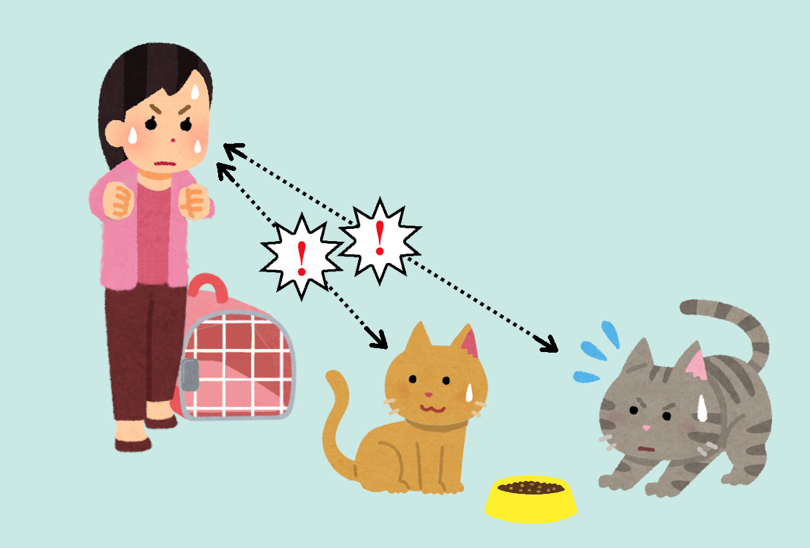
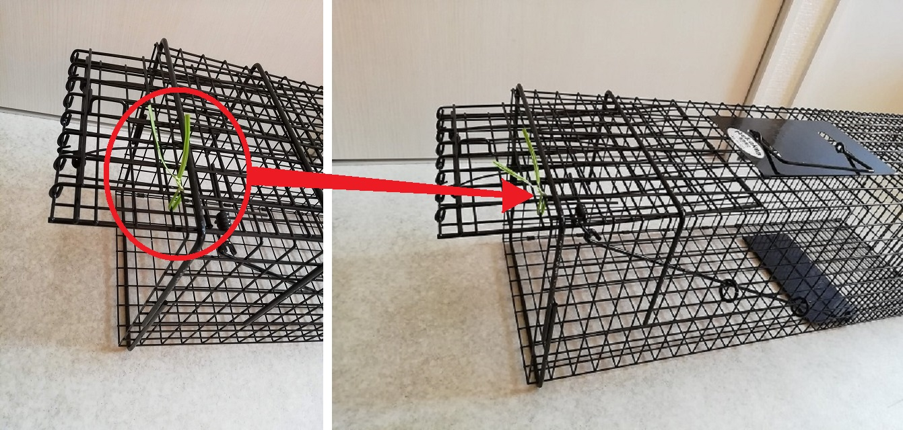
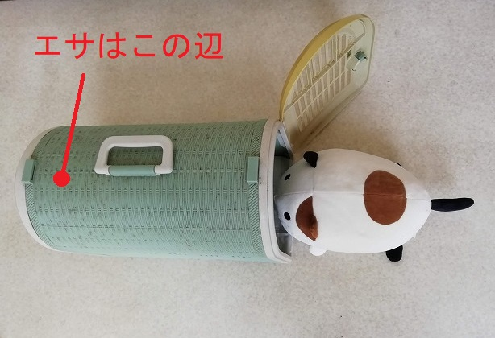
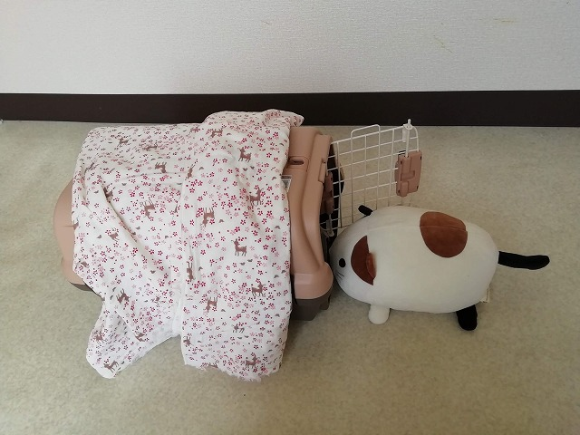
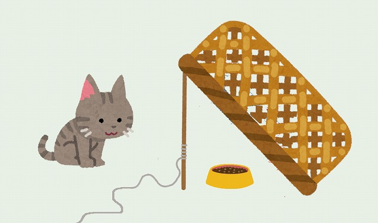

今日手術の予約が入っているから捕まえないと！
と、思ってしまいますよね？
残念ですがその思考、猫にはバレてます。
いつもと違う雰囲気を察知する能力。猫はズバ抜けて高いです。
目を合わせることすらＮＧです。
猫を見つめながら「おいで！」とか言ってませんか？
その時点でもはや猫との知恵比べに負けています。
ガン見しながら自分の知らない言語で話しかけてくる変にテンションの高い人物を想像して下さい。 近寄りたくないですよね？ 猫も同じです。
いつもと同じ気持ちで接してあげて下さい。
そして捕まえる時は優しく素早くさり気なく。
一度警戒されると、以降難易度が跳ね上がるので注意して下さい。
捕獲器の場合
捕獲器を使う場合は捕獲しようと思う前々から捕獲器に馴らしておくのも手です。
本来なら踏板を踏むと扉が閉まる構造になっている捕獲器ですが、普段は扉が閉まらないように針金やヒモで扉が閉まらない様に細工をしておきます。

この状態で捕獲器の中でエサを食べさせる事に慣れさせ、いざ捕まえる日になったら細工を外して扉が閉まるようにしておきます。
キャリーケースの場合
前もって、キャリーケースに馴らすために、中でエサを食べる習慣をつける方法もあります。
触れはしないが、近くまで来てエサを食べる猫であればうまくいく可能性があります。

画像の様なサイドに出入口のあるキャリーケースの一番奥で食べさせる習慣を付けると良いでしょう。
普段からこのキャリーの奥でエサを食べる様に馴らしておき、いざ手術の日に素早く静かに蓋を閉める・・・で上手くいく場合があります。

キャリーの中から外の気配が分からないように被せ物をして人の気配を悟らせない方法も良いでしょう。
失敗した時に、「あー！もう！！」とか大声を上げないのも大切です。
この声がきっかけで以降異常に警戒心が高くなってしまう可能性があるためです。
いつでも食べれる置きエサの状態だと、猫がいつ来るか予想できません。
決まった時間に餌付けをし、1時間以内に片付けて、猫にエサの時間を覚えさせると理想的でしょう。
トイレの始末も…と、続けたい所ですが、全てをやろうとすると必ず心が折れます。まずは避妊手術から。
以上の紹介した方法は、うまくいけばラッキーという程度の手段であって確実とは限りません。あくまで参考になればという話です。
警戒心の強い猫はテレパシーレベルで人の動向を察します。
想像の遥か上を行く捕獲難易度が高い猫もそれなりに存在します。
そういう猫に限って何度もお産を繰り返すのですが・・・

普通の捕獲器に対し警戒心を持ってしまった猫に関しては、イラストの様な大型スズメ取りのトラップ(ドロップトラップ)もあります。
どうしても捕まらない場合は、 城下町にゃんこの会 に「ドロップトラップ」のレンタルの相談をしてみてください。
ただしボランティア活動のみをお仕事としてされている訳ではないので、簡潔で礼節のあるお問い合わせをお願い致します。
とある猫の溜まり場になっている現場の捕獲の際、なるべく集中して短期間に終わらせるのが理想です。
日にちを空けると猫達の警戒心のレベルが高くなり、捕獲器は危険な物だと学習されてしまいます。
また、既に手術済の猫が何度も捕獲器に入ってしまう事も起こり得ます。
なるべく短い期間で終わらせるのが理想的でしょう。